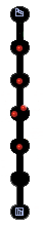
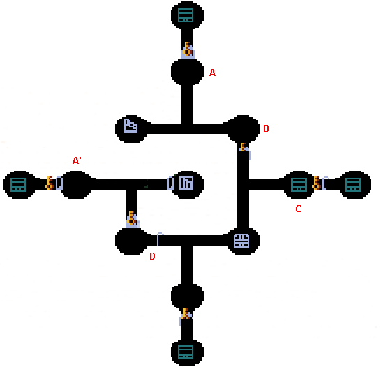
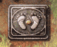
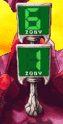
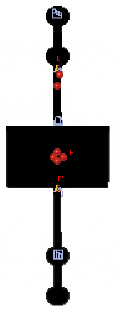

| 概要 | 情報 | アイテム一覧 |
| 敵キャラ一覧 | ステージ一覧 | 夢幻迷宮について |
| 攻略チャート | Zwei!! 攻略へ |
| ステージ選択へ |
パーヴェル庭園 Lv.13
|  |
|  | |
| A   |
A、A'地点には足マークのプレートがあります。 ボタンスイッチを押したときになる、リズムどおりにプレートを踏むと、扉が開きます。 |
| B |
B地点にはボタンスイッチが4つあります。 全てをONにすると扉が開きます。 |
| C  |
C地点にはZONYタイマーがあります。 このタイマーは同じ部屋にある宝箱を開閉するとカウントが増えます。 |
| D |
D地点にはZONYタイマーがあります。 このタイマーは部屋の扉を開閉するとカウンターが増えます。 |
|  | |
| E |
E地点には足マークのプレートがあります。 何の対策なしに上に乗っていると、敵に攻撃されるので、先に奥の部屋にいる敵を倒しましょう。 |
| F |
F地点には足マークのプレートがあります。 このプレートを踏むと、部屋に敵がたくさん現れます。 また、全ての敵を倒すと、F'地点に足プレートが出てきます。 |
| F' |
F'地点にはトゲが移動しています。 タイミングさえ合えば、トゲに触れることなく扉を開くことができます。 |
| ステージ選択へ |
| 概要 | 情報 | アイテム一覧 |
| 敵キャラ一覧 | ステージ一覧 | 夢幻迷宮について |
| 攻略チャート | Zwei!! 攻略へ |
Zwei!!
| 目次へ戻る | ページの上部へ |